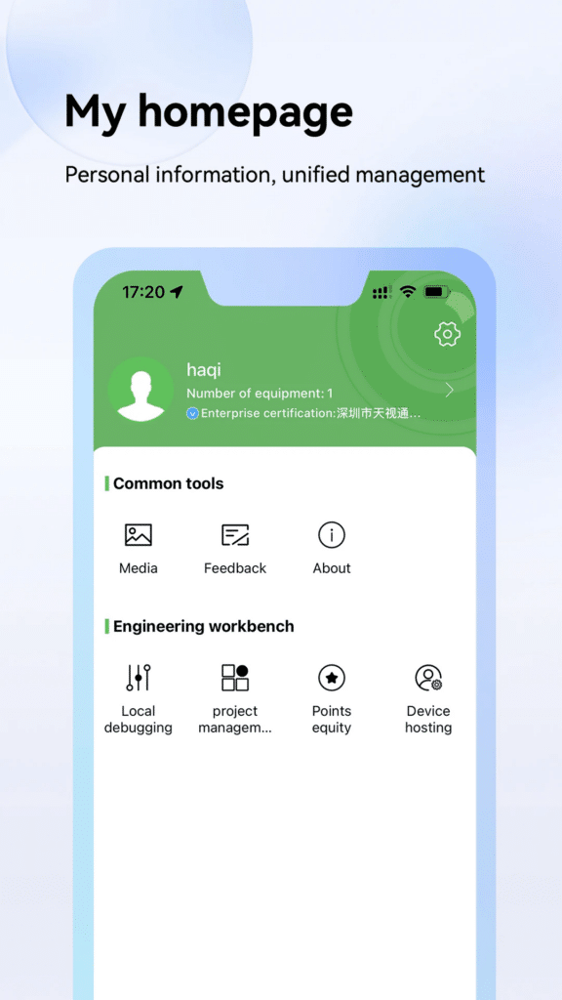
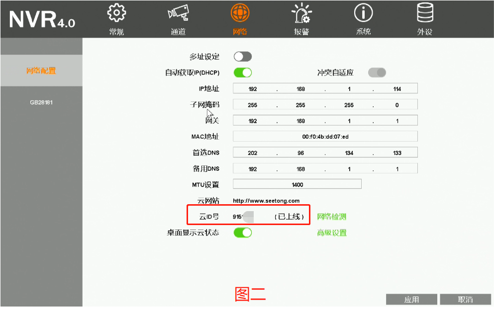

Seetong 上手三天，我把家里监控摄像头从"摆设"变成了真在用的东西
第一次接触天视通方案的 Seetong，从声波配网到手动添加再到本地相册管理，踩过的坑和真实感受一次说清。
说实话，之前我对家用监控摄像头的认知停留在"装上去能看就行"。去年装修时朋友送了一台无线摄像机，拆箱之后声波配网失败三次，扫码又扫不上，最后直接扔在了阳台角落当摆件——直到这周帮老丈人装第二个摄像头，才第一次正经坐下把 Seetong 这套东西玩明白。这套东西的官网上能看到它背后是天视通方案，不是那种贴牌小厂产品。
第一眼：界面比我想象的清爽
安装包从官方下载拿，比去应用商店搜更省事，版本更新也快一步。打开 App 登录进去，设备列表页就是一排缩略图卡片，每台设备一张、名字可以改。默认给的"无线摄像机1""录像机2"看久了会晕，我顺手改成"客厅""门口""院子"，瞬间就清楚了。

首页下方有五个 Tab：设备、回放、消息、云存、我的。说实话这个结构挺朴素的，没有花里胡哨的设计，但也没什么阻碍——想做什么点哪个，不需要绕。
声波配网：距离真的是命门
老丈人的摄像机是全新的，通电后镜头转了两圈发出提示音，看起来一切正常。我打开 Seetong 走声波配网流程：选"无线摄像机"，输入 2.4G WiFi 密码，点"等待配置提示音"，把手机凑上去——
第一次失败了。提示"设备未收到声波"。
我把手机贴到镜头十厘米以内，再试一次，还是失败。查了一下发现手机音量没开最大，调满之后第三次成功，镜头又转了一圈，列表里自动冒出了一台新设备。
后来翻Seetong文档才知道，声波配网对距离要求真的苛刻，官方建议 3 到 10 厘米，太远信号衰减、太近反而可能失真。我第一次大概离了半米，完全在有效范围之外。而且必须是 2.4G 频段，5G 直接配不上，不是设备有问题，是硬件本身不支持。如果环境太吵或者密码里有引号反斜杠这种特殊字符，成功率也会骤降，临时改个简单密码反而更快。
手动添加：云 ID 别输错
自己家用扫码和声波基本够了，但老丈人手里还有一台已经配过网的录像机，他想把它挂到自己账号下而不是继续用安装工的。这时候就轮到手动添加出场了。
手动添加只需要两样东西：云 ID 和设备密码。云 ID 是设备在云平台上的唯一编号，摄像机机身标签上二维码下方那串数字就是；录像机接显示器进本地界面，网络配置页能看到"云 ID 号"，旁边括号标着"已上线"就说明云连接正常。

这里我差点犯个错——一开始想把整个二维码内容都当成 ID 输进去，幸亏老丈人的侄子提醒说那就是一串数字。设备密码也不是 App 登录密码，是设备第一次激活时设置的云密码。好消息是现在的设备默认用户名一般都是 admin，坏消息是如果密码忘了得走屏幕上的临时密码二维码找回，比手机找回麻烦一点。
本地相册：别等换手机才想起导出
抓拍和录像这些文件，默认都存在 Seetong App 自己的"我的相册"里，在"我的"页的常用工具区。这个相册和手机系统相册是两回事——App 内相册负责分类管理、预览、删除，但文件只在手机本地存着，不上云、不跟着账号走。
我踩了个小坑：从实时画面抓了一张院子里猫溜进来的照片，想着回头分享给老丈人，结果直接在 Seetong 里转发给微信了。后来换手机恢复账号的时候才发现，那张图根本没了——它只存在旧手机的 App 相册里，根本没跟过来。
所以现在我的习惯是：重要的抓拍或者下载的录像片段，先在 App 里导出到手机系统相册，再发微信或者传到网盘。App 里长期不用的片段也定期清理一下，不然占手机空间还是挺可观的。
登录问题：间歇性的，别慌
Seetong 的登录问题我也算见识过了。老丈人那边时不时会出现"网络异常"或者验证码收不到的情况，后来摸索出规律：验证码收不到的时候先检查短信拦截和垃圾邮件夹（邮箱注册的话），再等 60 秒重发一次；密码错了走找回流程就行；微信登录失败的话改用手机号加密码方式登录试试。
我自己遇到过更诡异的——某一天所有画面集体加载不出来，以为是设备坏了，结果切到流量立刻就好，切回自家 WiFi 又不行。后来发现是路由器那天 DNS 出问题了，重启一下就恢复。所以画面加载不出来别先怪设备，先换网络试试，能快速定位问题是在手机侧还是设备侧。
版本更新也很重要。我最开始说的那台阳台摆件摄像机，更新固件之后声波配网居然一次就过了。新机出厂固件经常落后好几个版本，第一次配完网顺手去"我的——常用工具"里检查一下更新，能避开不少已知问题。
适合谁、不适合谁
适合 Seetong 的人：家里装了天视通方案的无线摄像机或者录像机，想用一个 App 统一管理、远程看实时画面、接收报警推送。操作逻辑不复杂，花一两个小时就能全部摸透。
不太适合的人：想直接扫码连非天视通品牌设备的——Seetong 不是通用监控 App，它只管自家方案。还有就是对云存储资费特别敏感的，Seetong 的增值服务入口在云存页，具体价格要看当时的活动，不是永远免费。
最后说一句
现在阳台那台摆件摄像机已经被我拿出来装在院门口了，声波配网一次过，抓拍、录像、报警推送都正常。Seetong 这套东西没什么惊艳的地方，界面朴素、功能实用、文档写得还算清楚——对一个家用监控客户端来说，这就够了。想深入研究各种配网方式、手动添加的细节或者故障排查，可以去翻它的中文文档，写得比一般厂商用心。
这套资料我在 GitHub、Gitee、GitCode 三个仓库都放了一份，镜像了一下方便不同网络环境的朋友取用，直接按对应目录找就行。